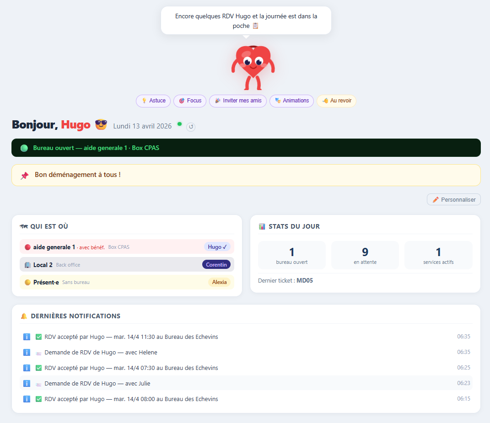
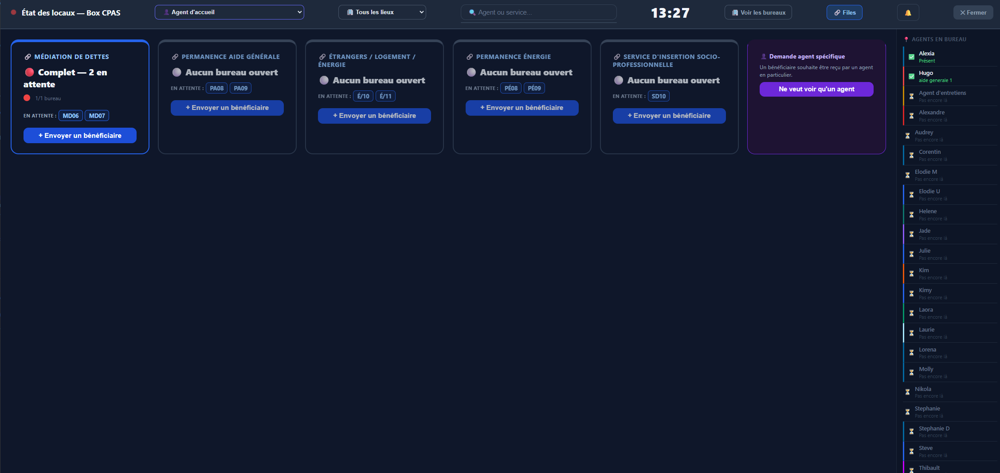
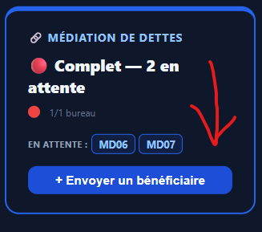
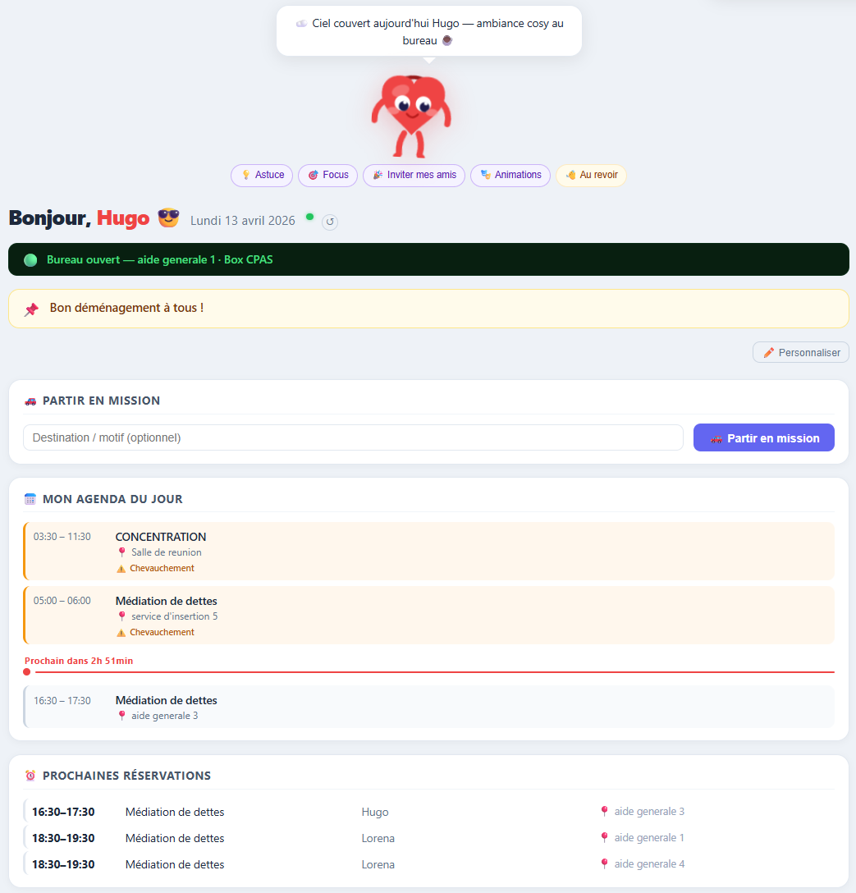
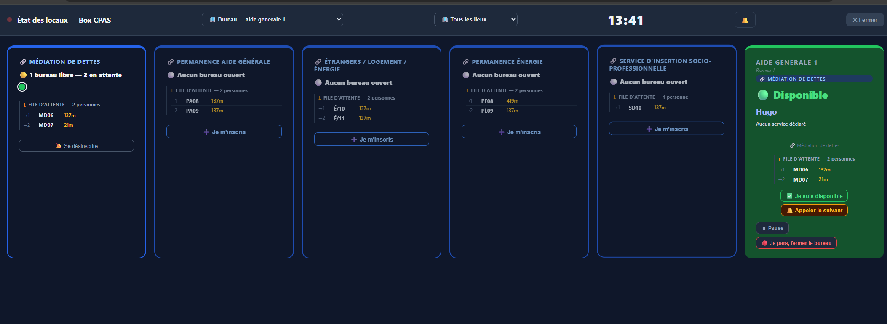
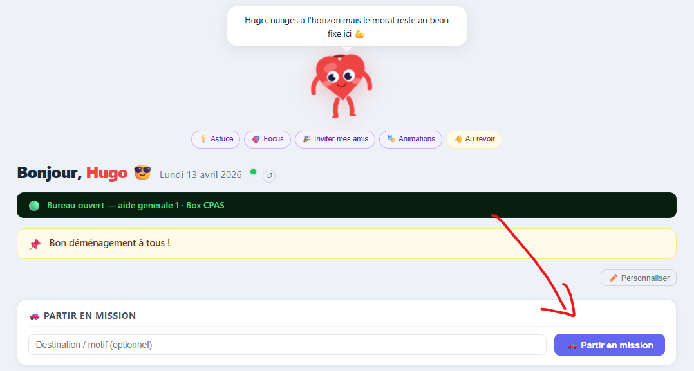
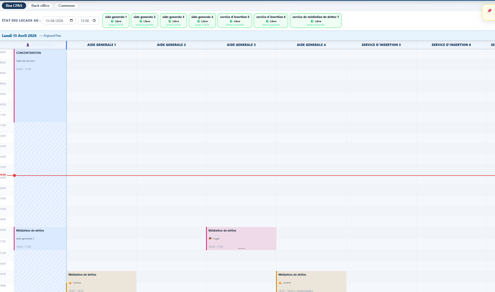

L'écran d'accueil est votre tableau de bord personnalisé. Il présente en temps réel les informations pertinentes pour votre poste : état des files d'attente, présences des agents, permanences actives, et notifications.
Cet écran est composé de widgets — des blocs d'information que vous pouvez afficher, masquer ou réorganiser selon vos préférences. La personnalisation s'effectue via le bouton ✏️ en haut à droite. Chaque agent dispose de sa propre configuration.

La vue DIRECT est l'écran que vous maintiendrez ouvert en permanence pendant votre service. Elle présente l'état de chaque bureau en temps réel : vert = libre, orange = occupé, gris = fermé.
Si le CPAS dispose de plusieurs sites, un menu déroulant vous permet de filtrer la vue par lieu. Les files d'attente actives s'affichent sous la carte de chaque service.


moncompagnon collecte exclusivement des données fonctionnelles anonymisées, nécessaires au bon fonctionnement de l'application. Exemple : lorsqu'un ticket de file est appelé, seul le temps d'attente (en secondes) est enregistré — sans nom, sans identité, sans information personnelle.
Ces données servent uniquement à améliorer l'estimation des temps d'attente. Vos connexions, vos notes et toute information à caractère personnel restent strictement confidentielles.
Votre écran d'accueil présente votre agenda du jour, vos prochaines réservations de bureau, et vos notifications. Le widget Mission y est également accessible directement pour signaler vos déplacements en temps réel.

Lors de vos permanences, la vue DIRECT vous montre l'état de votre file d'attente. Sélectionnez votre lieu dans le menu déroulant en haut pour concentrer la vue sur votre bureau.


La page Calendrier vous permet de réserver un bureau pour une permanence, un entretien ou une réunion. La vue journalière présente les créneaux heure par heure ; un filtre par local vous permet de cibler rapidement un espace disponible.
Une fois votre réservation confirmée, le créneau est immédiatement bloqué et visible par l'ensemble des collaborateurs — sans risque de double réservation.

moncompagnon collecte exclusivement des données fonctionnelles anonymisées : par exemple, la durée d'attente d'un ticket (sans nom ni identité associée), ou le nombre de permanences actives. Ces données servent uniquement à améliorer l'estimation des temps d'attente.
Vos notes, vos connexions et toute information à caractère personnel restent strictement confidentielles et ne sont jamais partagées sans votre consentement explicite.
Votre tableau de bord est orienté planning : vous y consultez les prochaines réservations, le planning hebdomadaire complet, et les notifications importantes (absences déclarées, demandes de modification).
Le calendrier offre une vue complète de toutes les réservations de locaux pour l'ensemble des agents. Il est filtrable par local, par agent, par jour, semaine ou mois.
moncompagnon collecte exclusivement des données fonctionnelles anonymisées. En tant qu'administrateur·rice, vous avez accès aux données de planification de l'organisation (réservations, présences déclarées), mais aucune donnée personnelle identifiable n'est collectée ou transmise à des tiers.
Votre écran d'accueil présente en continu les indicateurs clés : nombre de bureaux ouverts, nombre de bénéficiaires en attente, services actifs, temps d'attente moyen par service. Ces données sont mises à jour automatiquement, sans action de votre part.
Vous disposez également d'une vue complète des présences : qui est dans quel bureau, qui est en mission, qui est absent.
La vue DIRECT vous offre une photographie instantanée de l'activité sur l'ensemble des sites : état des bureaux, files actives, bénéficiaires en attente. Elle est filtrable par lieu. Cette vue se met à jour automatiquement et ne requiert aucune manipulation.
Les données affichées dans le tableau de bord sont des données agrégées et anonymisées (temps d'attente moyens, nombre de permanences actives, statistiques de charge). Aucune donnée permettant d'identifier individuellement un bénéficiaire n'est accessible depuis cette interface.
Votre tableau de bord combine la supervision de votre service (présences, permanences actives) et votre agenda personnel. Vous pouvez personnaliser les widgets selon vos priorités.
La vue DIRECT vous montre en temps réel les permanences actives de votre service, la charge des files d'attente, et les agents présents. Si vous assurez vous-même une permanence, vous retrouvez les mêmes fonctionnalités que vos collaborateurs : déclaration de présence, gestion de file, appel du suivant.
Les données de présence et de permanence que vous consultez sont des données de fonctionnement déclarées par les agents eux-mêmes. Aucune donnée n'est collectée à leur insu. Les informations relatives aux bénéficiaires (noms de tickets, si saisis) sont conservées le temps de la permanence uniquement.
Votre écran d'accueil met en avant le widget Mission et votre agenda du jour. Vous pouvez démarrer ou terminer une mission en quelques secondes depuis cet écran.
Les informations de mission que vous saisissez (adresse, commentaire) sont visibles par vos collègues connectés pendant la durée de la mission uniquement. Elles ne sont pas archivées de façon permanente. moncompagnon ne collecte aucune donnée de géolocalisation.
Votre écran d'accueil présente le planning des réservations du jour et de la semaine, ainsi que les prochaines occupations de locaux. Les notifications vous alertent en cas de réservation de dernière minute dans un local que vous préparez.
Depuis l'onglet Calendrier, vous consultez les réservations par local pour la journée ou la semaine. Vous identifiez ainsi les créneaux libres disponibles pour les nettoyages approfondi, et les moments d'occupation à respecter.
Cette consultation est en lecture seule — vous ne créez ni ne modifiez de réservations.
Vous n'avez accès qu'aux données de réservation des locaux (horaires et types de service), sans information identifiant les bénéficiaires. moncompagnon ne collecte aucune donnée personnelle vous concernant au-delà de votre statut de présence déclaré.
Votre tableau de bord présente votre agenda du jour, vos prochaines permanences et rendez-vous, ainsi que les demandes de rendez-vous en attente de votre réponse. Les notifications importantes sont centralisées ici.
moncompagnon collecte exclusivement des données fonctionnelles anonymisées. Les informations relatives à vos consultations (noms de bénéficiaires, notes de dossier) ne transitent pas par moncompagnon et ne sont pas stockées dans le système. Vos données de planning restent strictement dans le périmètre du CPAS.